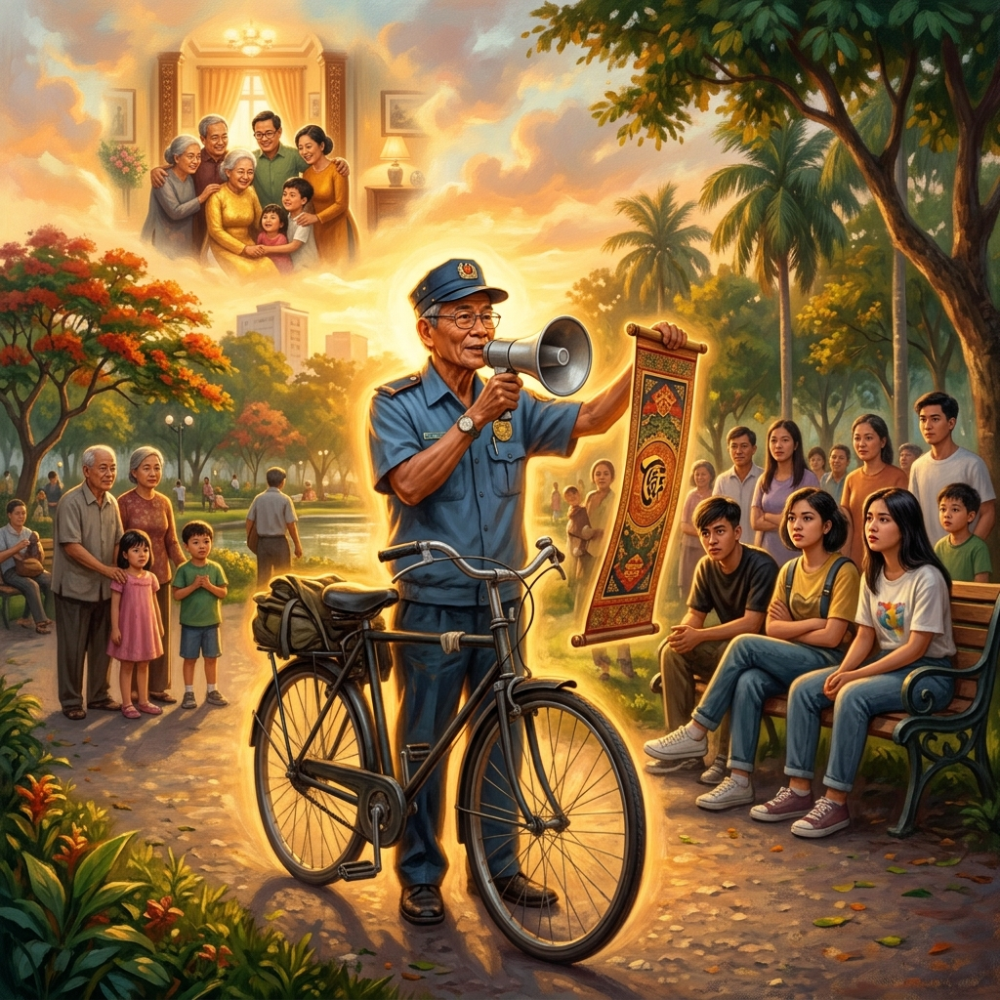
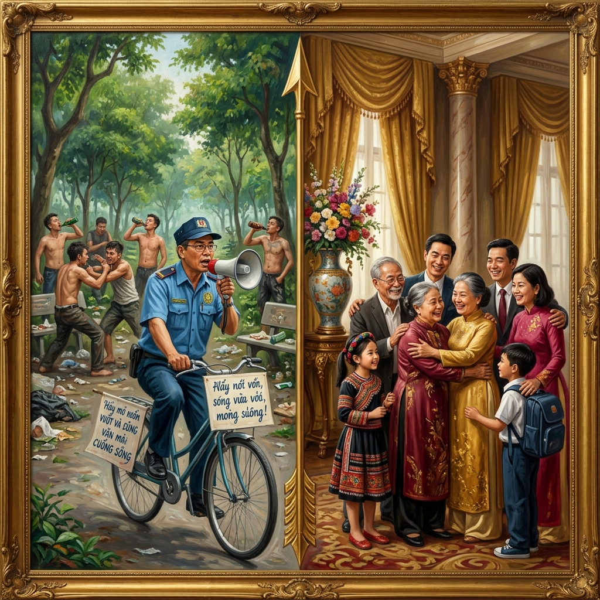
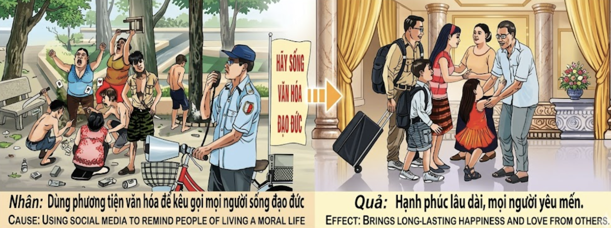

El Sembrador de ConcienciasThe Sower of ConsciencesIl Seminatore di Coscienze良知的播种者زارع الضمائرСеятель совестиDer Säer des GewissensLe Semeur de Consciences良心の種蒔き人O Semeador de ConsciênciasNgười Gieo Lương Tri
Quien usa su voz, su tiempo o su ejemplo para llamar a otros a vivir con rectitud no obtiene riqueza ni fama: obtiene algo que ni la riqueza ni la fama pueden comprar — la felicidad que dura más que una vida, y el amor verdadero de todos los que le rodean. He who uses his voice, his time, or his example to call others to live with integrity does not gain wealth or fame: he gains something neither wealth nor fame can buy — happiness that lasts longer than a lifetime, and the true love of everyone around him. Chi usa la propria voce, il proprio tempo o il proprio esempio per chiamare gli altri a vivere con rettitudine non ottiene ricchezza né fama: ottiene qualcosa che né la ricchezza né la fama possono comprare — la felicità che dura più di una vita, e l'amore vero di tutti coloro che lo circondano. 用声音、时间或榜样呼唤他人正直生活的人，不会获得财富或名声：他获得的是财富和名声无法买到的东西——超越一生的幸福，以及周围所有人真诚的爱。 من يستخدم صوته أو وقته أو قدوته ليدعو الآخرين إلى الاستقامة لا يحصل على ثروة ولا شهرة: يحصد ما لا يشتريه مال ولا شهرة — السعادة التي تدوم أطول من العمر، والحب الحقيقي من كل من حوله. Кто использует свой голос, своё время или свой пример, чтобы призывать других жить праведно, не обретает ни богатства, ни славы: он обретает то, что ни богатство, ни слава купить не могут — счастье, которое длится дольше жизни, и истинную любовь всех, кто его окружает. Wer seine Stimme, seine Zeit oder sein Beispiel nutzt, um andere zu einem aufrechten Leben aufzurufen, gewinnt weder Reichtum noch Ruhm: Er gewinnt etwas, das weder Reichtum noch Ruhm kaufen können — Glück, das länger als ein Leben währt, und die wahre Liebe aller, die ihn umgeben. Celui qui utilise sa voix, son temps ou son exemple pour appeler les autres à vivre avec droiture n'obtient ni richesse ni gloire : il obtient ce que ni la richesse ni la gloire ne peuvent acheter — le bonheur qui dure plus qu'une vie, et l'amour vrai de tous ceux qui l'entourent. 自らの声や時間や手本を用いて他者に誠実に生きるよう呼びかける者は、富も名声も得ません。富も名声も買えないものを得るのです——一生を超えて続く幸福と、周囲のすべての人からの真の愛を。 Quem usa a sua voz, o seu tempo ou o seu exemplo para chamar os outros a viver com retidão não obtém riqueza nem fama: obtém algo que nem a riqueza nem a fama podem comprar — a felicidade que dura mais do que uma vida, e o amor verdadeiro de todos os que o rodeiam. Người dùng giọng nói, thời gian hay tấm gương để kêu gọi người khác sống đạo đức không nhận được giàu sang hay danh tiếng: họ nhận được thứ giàu sang và danh tiếng không mua nổi — hạnh phúc bền lâu hơn cả một đời người, và tình yêu chân thật từ tất cả những người xung quanh.
De todas las formas de karma positivo, quizá la más luminosa y la menos comprendida sea la de quien dedica su vida a recordar a los demás que existe un camino recto. No se trata de predicar desde un púlpito ni de juzgar desde un trono: se trata de algo mucho más humilde, más valiente y más raro. Se trata del guardia cívico que cada mañana coge su bicicleta, su megáfono y su pancarta, y se adentra en el parque donde los jóvenes perdidos beben, pelean y arrojan basura al suelo, para decirles con voz firme pero sin desprecio: "Hay otra manera de vivir. Hay una vida con cultura, con decencia, con propósito." Nadie le paga por ello. Nadie le aplaude. Muchos se ríen de él. Pero el karma — que es el contable más preciso del universo — anota cada palabra suya en el libro de las causas nobles.
La retribución kármica por predicar la virtud no llega en forma de tesoro ni de corona. Llega en forma de algo que ningún tesoro puede comprar y ninguna corona puede otorgar: felicidad duradera y el amor sincero de todos los seres que cruzan tu camino. El que siembra conciencias cosecha abrazos. El que enseña moral recibe lealtad. El que llama al bien con paciencia y sin soberbia construye, sin saberlo, una familia espiritual que trasciende los lazos de sangre: una familia de almas agradecidas que lo reconocen, en esta vida o en la siguiente, como el faro que los salvó del naufragio. Y cuando ese hombre humilde llega a su hogar, se encuentra rodeado de hijos que lo respetan, de nietos que lo abrazan, de vecinos que lo saludan con cariño genuino, de una paz tan sólida que ni las tormentas del mundo pueden perturbarla.
Of all forms of positive karma, perhaps the most luminous and least understood is that of one who dedicates their life to reminding others that a righteous path exists. It is not about preaching from a pulpit or judging from a throne: it is something far more humble, braver, and rarer. It is the civic guard who every morning takes his bicycle, his megaphone, and his banner, and ventures into the park where lost youths drink, fight, and throw trash on the ground, to tell them with a firm voice but without contempt: "There is another way to live. There is a life with culture, with decency, with purpose." No one pays him. No one applauds. Many laugh. But karma—the most precise accountant in the universe—records every word in the book of noble causes.
The karmic retribution for preaching virtue does not come as treasure or crown. It comes as something no treasure can buy and no crown can bestow: lasting happiness and the sincere love of every being who crosses your path. He who sows consciences harvests embraces. He who teaches morality receives loyalty. He who calls toward goodness with patience and without arrogance builds, unknowingly, a spiritual family that transcends blood ties: a family of grateful souls who recognize him, in this life or the next, as the lighthouse that saved them from shipwreck. And when that humble man arrives home, he finds himself surrounded by children who respect him, grandchildren who embrace him, neighbors who greet him with genuine affection, and a peace so solid that not even the world's storms can disturb it.
Fra tutte le forme di karma positivo, forse la più luminosa e meno compresa è quella di chi dedica la propria vita a ricordare agli altri che esiste un cammino retto. Si tratta della guardia civica che ogni mattina prende la bicicletta, il megafono e lo striscione, e si avventura nel parco dove giovani smarriti bevono e litigano, per dire loro con voce ferma ma senza disprezzo: "C'è un altro modo di vivere." Nessuno lo paga. Molti ridono. Ma il karma annota ogni parola nel libro delle cause nobili.
La retribuzione karmica per chi predica la virtù non arriva come tesoro né come corona: arriva come felicità duratura e amore sincero. Chi semina coscienze raccoglie abbracci. Chi chiama al bene con pazienza costruisce, senza saperlo, una famiglia spirituale che trascende i legami di sangue. E quando quell'uomo umile torna a casa, si trova circondato da figli che lo rispettano, nipoti che lo abbracciano, e una pace che nemmeno le tempeste del mondo possono turbare.
在所有形式的正面业力中，也许最光辉而最不被理解的，是将一生奉献于提醒他人正道存在之人的业力。这不是从讲坛上布道，也不是从宝座上审判：这是更谦卑、更勇敢、更稀有的事。这是那位每天早晨骑着自行车、拿着扩音器和横幅、走进失落青年喝酒打架丢垃圾的公园，用坚定而不带蔑视的声音对他们说："还有另一种活法。可以有文化、有尊严、有目标地活着。"没人付他报酬。没人鼓掌。很多人嘲笑。但业力——宇宙中最精确的会计——在高尚事业的账簿上记下他的每一句话。
宣扬美德的业力回报不以财宝或王冠的形式到来。它以任何财宝买不到、任何王冠授予不了的东西到来：持久的幸福和你生命中遇到的每个人真诚的爱。播种良知的人收获拥抱。教导道德的人获得忠诚。以耐心和谦逊呼唤善良的人，在不知不觉中建立了一个超越血缘的精神家庭。当那个谦逊的人回到家，他发现自己被尊敬他的孩子、拥抱他的孙子和用真诚情感问候他的邻居所环绕。
من بين جميع أشكال الكارما الإيجابية، ربما يكون أكثرها إشراقاً وأقلها فهماً هو كارما من يكرّس حياته لتذكير الآخرين بأن طريقاً مستقيماً موجود. الحارس المدني الذي يمتطي دراجته كل صباح ويأخذ مكبر صوته ولافتته ويتوجه إلى الحديقة حيث شباب ضائعون يشربون ويتقاتلون ليقول لهم بصوت حازم دون ازدراء: "هناك طريقة أخرى للعيش." لا أحد يدفع له. كثيرون يسخرون. لكن الكارما يسجل كل كلمة.
المكافأة الكارمية لدعوة الناس إلى الفضيلة لا تأتي كنزاً ولا تاجاً: تأتي سعادة دائمة وحباً صادقاً. من يزرع ضمائر يحصد أحضاناً. من يدعو إلى الخير بصبر يبني أسرة روحية تتجاوز روابط الدم. وحين يعود ذلك الرجل المتواضع إلى بيته يجد نفسه محاطاً بأبناء يحترمونه وأحفاد يعانقونه وسلام لا تزعزعه عواصف الدنيا.
Из всех форм положительной кармы, пожалуй, самая светлая и наименее понятая — карма того, кто посвящает жизнь напоминанию другим о том, что праведный путь существует. Это гражданский охранник, который каждое утро берёт велосипед, мегафон и плакат и отправляется в парк, где заблудшие юноши пьют и дерутся, чтобы сказать им без презрения: «Есть другой способ жить.» Никто не платит ему. Многие смеются. Но карма записывает каждое слово.
Кармическое воздаяние за проповедь добродетели приходит не сокровищем и не короной: оно приходит как долговечное счастье и искренняя любовь. Кто сеет совесть — жнёт объятия. Кто зовёт к добру с терпением — строит духовную семью, превосходящую кровные узы. Когда этот скромный человек возвращается домой, его окружают дети с уважением, внуки с объятиями и мир, который не поколеблют никакие бури.
Von allen Formen positiven Karmas ist vielleicht die leuchtendste und am wenigsten verstandene jene dessen, der sein Leben der Erinnerung anderer widmet, dass ein rechter Weg existiert. Es ist die Bürgerwache, die jeden Morgen das Fahrrad nimmt, das Megaphon und das Banner, und in den Park fährt, wo verlorene Jugendliche trinken und kämpfen, um ihnen ohne Verachtung zu sagen: „Es gibt einen anderen Weg zu leben." Niemand bezahlt ihn. Viele lachen. Aber Karma verzeichnet jedes Wort.
Die karmische Vergeltung für das Predigen der Tugend kommt nicht als Schatz oder Krone: sie kommt als dauerhaftes Glück und aufrichtige Liebe. Wer Gewissen sät, erntet Umarmungen. Wer zum Guten ruft, baut eine geistliche Familie, die Blutsbande übersteigt. Wenn dieser bescheidene Mann heimkehrt, findet er sich umgeben von Kindern, die ihn achten, Enkeln, die ihn umarmen, und einem Frieden, den keine Stürme erschüttern können.
De toutes les formes de karma positif, la plus lumineuse est peut-être celle de qui consacre sa vie à rappeler aux autres qu'un chemin droit existe. C'est le garde civique qui chaque matin prend son vélo, son mégaphone et sa bannière, et s'aventure dans le parc où des jeunes perdus boivent et se battent, pour leur dire sans mépris : « Il y a une autre façon de vivre. » Personne ne le paie. Beaucoup rient. Mais le karma inscrit chaque mot.
La rétribution karmique pour qui prêche la vertu ne vient pas en trésor ni en couronne : elle vient en bonheur durable et en amour sincère. Qui sème des consciences récolte des étreintes. Qui appelle au bien avec patience bâtit une famille spirituelle qui transcende les liens du sang. Quand cet homme humble rentre chez lui, il se trouve entouré d'enfants qui le respectent, de petits-enfants qui l'enlacent, et d'une paix que nulle tempête ne peut troubler.
すべての正のカルマの形の中で、おそらく最も輝かしく最も理解されていないのは、正しい道が存在することを他者に思い出させることに人生を捧げる者のカルマです。毎朝自転車とメガホンと横断幕を持って、迷える若者たちが飲み、喧嘩し、ゴミを散らかす公園に出向き、軽蔑なく確固たる声で「別の生き方がある」と語る市民警備員。誰も報酬を払いません。多くの人が笑います。しかしカルマは——宇宙で最も正確な会計士は——高貴な行いの帳簿にすべての言葉を記録します。
美徳を説くことへのカルマの報いは、宝物でも王冠でもありません。どんな宝物も買えず、どんな王冠も授けられないものとして来ます。一生を超えて続く幸福と、出会うすべての人からの真摯な愛です。良心を蒔く者は抱擁を収穫します。忍耐と謙虚さで善を呼びかける者は、知らず知らずのうちに血縁を超えた精神の家族を築きます。
De todas as formas de karma positivo, talvez a mais luminosa e menos compreendida seja a de quem dedica a sua vida a recordar aos outros que existe um caminho reto. É o guarda cívico que todas as manhãs pega na bicicleta, no megafone e na faixa, e se aventura no parque onde jovens perdidos bebem e lutam, para lhes dizer sem desprezo: "Há outra maneira de viver." Ninguém lhe paga. Muitos riem. Mas o karma regista cada palavra.
A retribuição kármica de quem prega a virtude não chega como tesouro nem como coroa: chega como felicidade duradoura e amor sincero. Quem semeia consciências colhe abraços. Quem chama ao bem com paciência constrói uma família espiritual que transcende os laços de sangue. E quando esse homem humilde regressa a casa, encontra-se rodeado de filhos que o respeitam, netos que o abraçam e uma paz que as tempestades do mundo não podem perturbar.
Trong mọi hình thức nhân quả tích cực, có lẽ sáng chói nhất và ít được hiểu nhất là nghiệp của người dành cả đời nhắc nhở mọi người rằng con đường chính đạo tồn tại. Đó là người bảo vệ khu phố mỗi sáng đạp xe, cầm loa và biểu ngữ, đi vào công viên nơi những thanh niên lầm lạc uống rượu, đánh nhau, xả rác dưới đất, để nói với họ bằng giọng kiên quyết nhưng không khinh miệt: "Còn một cách sống khác. Một cuộc sống có văn hóa, có đạo đức, có mục đích." Không ai trả công. Nhiều người cười nhạo. Nhưng nhân quả — người kế toán chính xác nhất vũ trụ — ghi lại từng lời trong sổ sách những nghiệp lành.
Quả báo nhân quả cho việc gieo đạo đức không đến dưới dạng kho báu hay vương miện: nó đến dưới dạng hạnh phúc bền lâu và tình yêu chân thành từ mọi người xung quanh. Ai gieo lương tri sẽ gặt vòng tay. Ai dạy đạo đức sẽ nhận được lòng trung thành. Ai kêu gọi điều thiện bằng kiên nhẫn và khiêm tốn sẽ xây nên — mà không hay biết — một gia đình tâm linh vượt lên trên huyết thống. Và khi người ấy trở về nhà, ông được bao quanh bởi con cái kính trọng, cháu chắt ôm ấp, hàng xóm chào bằng tình cảm chân thành, và một sự bình an vững chãi đến nỗi bão tố thế gian cũng không lay chuyển nổi.
El Hombre del Megáfono
The Man with the Megaphone
L'Uomo col Megafono
手持扩音器的人
رجل مكبر الصوت
Человек с мегафоном
Der Mann mit dem Megaphon
L'Homme au Mégaphone
メガホンの男
O Homem do Megafone
Người Đàn Ông Cầm Loa
Le preguntaron una vez a un maestro: "¿Quién es el hombre más rico del mundo?" Y el maestro, en lugar de responder, contó la historia del señor Minh.
Minh era un guardia cívico de un barrio olvidado de Saigón. Tenía gafas de montura redonda, un uniforme azul desteñido por el sol, una bicicleta vieja con una cesta de mimbre, y un megáfono que sonaba como si tosiera. Cada mañana, a las seis en punto, Minh recorría el parque del barrio, donde una docena de jóvenes se reunía para beber cerveza barata, fumar, pelear entre ellos y tirar las botellas rotas al césped. Los vecinos los temían. La policía los ignoraba. Los padres lloraban por ellos detrás de puertas cerradas. Pero Minh — con su bicicleta vieja y su megáfono enfermo — se paraba delante de ellos cada mañana y les decía lo mismo: "Buenos días, hijos míos. Hoy es un buen día para empezar de nuevo. Hay una vida con cultura, con decencia, con amor. Y esa vida os está esperando, si tenéis el valor de caminar hacia ella."
Los jóvenes se reían de él. Le tiraron botellas. Le escupieron. Uno le pinchó la rueda de la bicicleta. Otro le robó el megáfono y lo lanzó al lago. Minh lo rescató, lo secó, y al día siguiente volvió a las seis en punto. Los vecinos le decían: "Déjalo ya, Minh. Es inútil. Esos chicos no tienen remedio." Y Minh respondía siempre lo mismo: "Un sembrador no juzga la tierra antes de plantar. Planta. Y si la semilla no germina hoy, germinará mañana, o el año que viene, o dentro de diez años. Pero si no la planto, no germinará jamás."
Pasaron cinco años. Un día, Minh — ya anciano — llegó al parque y encontró algo que no esperaba: las botellas habían desaparecido. Los bancos estaban limpios. Y allí, esperándolo, estaban ocho de aquellos doce jóvenes. Pero ya no eran jóvenes perdidos: uno era enfermero, otro electricista, otra maestra de escuela, otro conductor de autobús. Se habían reunido en el parque para decirle algo. El que había sido el más violento de todos, un muchacho llamado Tùng, se adelantó con los ojos húmedos y le dijo: "Señor Minh, usted venía cada mañana y nosotros nos burlábamos. Pero su voz se nos quedó dentro. Era como una semilla que no podíamos arrancarnos, aunque quisiéramos. Y un día germinó. Usted nos salvó la vida. Hoy hemos venido a presentarle a nuestras familias." Y detrás de Tùng aparecieron esposas, maridos, hijos pequeños, abuelos. Treinta y siete personas en total, todas sonriendo, todas rodeando a aquel anciano flaco con gafas redondas, y Minh — que nunca había tenido hijos propios — comprendió que tenía la familia más grande del barrio.
Minh murió un domingo de noviembre a los ochenta y dos años. A su funeral acudieron cuatrocientas personas. Cuatrocientas. No había flores suficientes. Un periodista le preguntó a Tùng, que ahora era jefe de bomberos, quién había sido aquel hombre. Y Tùng le respondió con una frase que el maestro repitió a sus discípulos como la respuesta a su pregunta original: "El señor Minh era el hombre más rico del mundo. Porque no poseía nada, pero todo el barrio le pertenecía — no porque lo hubiera comprado, sino porque lo había sembrado."
A teacher was once asked: "Who is the richest man in the world?" Instead of answering, the teacher told the story of Mr. Minh.
Minh was a civic guard in a forgotten neighborhood of Saigon. He had round glasses, a sun-faded blue uniform, an old bicycle with a wicker basket, and a megaphone that sounded as if it were coughing. Every morning at six sharp, Minh rode through the neighborhood park, where a dozen youths gathered to drink cheap beer, smoke, fight, and hurl broken bottles onto the grass. Neighbors feared them. Police ignored them. Parents wept behind closed doors. But Minh—with his old bicycle and his ailing megaphone—would stop before them every morning and say the same thing: "Good morning, my children. Today is a good day to start over. There is a life with culture, with decency, with love. And that life is waiting for you, if you have the courage to walk toward it."
The youths laughed at him. They threw bottles. They spat. One punctured his tire. Another stole his megaphone and hurled it into the lake. Minh rescued it, dried it, and the next day came back at six sharp. Neighbors told him: "Give it up, Minh. It's useless." Minh always answered the same way: "A sower does not judge the soil before planting. He plants. If the seed doesn't sprout today, it will tomorrow, or next year, or in ten years. But if I don't plant it, it will never sprout at all."
Five years passed. One day, Minh—now elderly—arrived at the park and found something unexpected: the bottles were gone. The benches were clean. And there, waiting for him, were eight of those twelve youths. But they were no longer lost: one was a nurse, another an electrician, another a schoolteacher, another a bus driver. They had gathered to tell him something. The one who had been the most violent—a boy named Tùng—stepped forward with wet eyes and said: "Mr. Minh, you came every morning and we mocked you. But your voice stayed inside us. It was like a seed we couldn't tear out even if we wanted to. And one day it sprouted. You saved our lives. Today we've come to introduce you to our families." Behind Tùng appeared wives, husbands, small children, grandparents. Thirty-seven people in total—all smiling, all surrounding that gaunt old man with round glasses. Minh—who had never had children of his own—understood that he had the largest family in the neighborhood.
Minh died on a November Sunday at eighty-two. Four hundred people came to his funeral. Four hundred. There weren't enough flowers. A journalist asked Tùng—now a fire chief—who that man had been. Tùng answered with a phrase the teacher repeated to his disciples as the answer to his original question: "Mr. Minh was the richest man in the world. Because he owned nothing, but the entire neighborhood belonged to him—not because he had bought it, but because he had sown it."
Chiesero a un maestro: "Chi è l'uomo più ricco del mondo?" Il maestro raccontò la storia del signor Minh, guardia civica di un quartiere dimenticato di Saigon, con occhiali tondi, uniforme blu sbiadita e un megafono che sembrava tossire. Ogni mattina alle sei percorreva il parco dove una dozzina di giovani beveva, fumava e gettava bottiglie rotte sull'erba, dicendo: "Buongiorno, figli miei. C'è una vita con cultura, decenza, amore. Vi aspetta, se avete il coraggio di camminarvi incontro."
I giovani ridevano, lanciavano bottiglie, gli bucarono la ruota. Minh rispondeva ai vicini che lo giudicavano: "Un seminatore non giudica la terra prima di piantare. Pianta." Cinque anni dopo, otto dei dodici giovani lo aspettavano nel parco — adesso infermiere, elettricista, maestra, autista. Il più violento, Tùng, disse con gli occhi umidi: "La sua voce ci è rimasta dentro come un seme che non potevamo strappare." Dietro di lui, trentasette persone — le loro famiglie.
Al funerale di Minh vennero quattrocento persone. Tùng, ora capo dei vigili del fuoco, disse al giornalista: "Il signor Minh era l'uomo più ricco del mondo. Non possedeva nulla, ma tutto il quartiere gli apparteneva — non perché lo avesse comprato, ma perché lo aveva seminato."
有人问一位老师："谁是世界上最富有的人？"老师讲了明先生的故事。明是西贡一个被遗忘社区的社区警卫。他有圆框眼镜、一件被太阳晒褪色的蓝色制服、一辆带柳条筐的旧自行车和一个咳嗽般的扩音器。每天早晨六点整，明骑车穿过社区公园——那里有十几个年轻人聚在一起喝廉价啤酒、打架、把碎瓶子扔到草坪上——用坚定但不带蔑视的声音说："早上好，孩子们。今天是重新开始的好日子。有一种有文化、有尊严、有爱的生活在等着你们。"
年轻人嘲笑他，扔瓶子，扎破他的轮胎。邻居们说："别管了，明。没用的。"明总是回答："播种的人在播种之前不评判土地。他只管播种。如果种子今天不发芽，明天会，明年会，十年后会。但如果我不种，它永远不会发芽。"五年后，那十二个年轻人中有八个在公园里等他——现在是护士、电工、老师、公交车司机。最暴力的松湿着眼睛说："明先生，您的声音留在了我们心里，像一颗拔不掉的种子。有一天它发芽了。今天我们带家人来认识您。"松身后出现了三十七个人——妻子、丈夫、小孩、祖父母。
明在八十二岁一个十一月的周日去世。四百人参加了他的葬礼。现已是消防队长的松对记者说："明先生是世界上最富有的人。因为他什么都没拥有，但整个社区都属于他——不是因为他买了它，而是因为他播种了它。"
سُئل معلم ذات يوم: "من هو أغنى رجل في العالم؟" فروى قصة السيد مينه، حارس مدني في حيّ منسيّ بسايغون. كان يمتلك نظارات مستديرة وزيّاً أزرق باهتاً ودراجة قديمة ومكبر صوت يبدو كأنه يسعل. كل صباح عند السادسة تماماً كان يقف أمام عشرة شباب ضائعين في الحديقة ويقول: "صباح الخير يا أبنائي. هناك طريقة أخرى للعيش."
سخروا منه ورموه بالزجاجات. كان يجيب الجيران: "الزارع لا يحكم على التربة قبل أن يزرع. يزرع فحسب." بعد خمس سنوات انتظره ثمانية منهم — ممرض وكهربائي ومعلمة وسائق. أكثرهم عنفاً قال بعيون رطبة: "صوتك بقي فينا كبذرة لم نستطع اقتلاعها." خلفه ظهرت سبع وثلاثون شخصاً — عائلاتهم.
في جنازة مينه حضر أربعمائة شخص. قال تونغ — رئيس الإطفاء الآن — للصحفي: "السيد مينه كان أغنى رجل في العالم. لم يملك شيئاً لكن الحيّ كله كان ملكه — لا لأنه اشتراه بل لأنه زرعه."
Учителя спросили: «Кто самый богатый человек на свете?» Он рассказал историю господина Миня — гражданского охранника в забытом районе Сайгона. Круглые очки, выгоревшая форма, старый велосипед и кашляющий мегафон. Каждое утро в шесть он останавливался перед дюжиной потерянных юношей и говорил: «Доброе утро, дети мои. Есть другая жизнь — с культурой, достоинством, любовью.»
Юноши смеялись, бросали бутылки, прокалывали шину. Соседям Минь отвечал: «Сеятель не судит почву перед посевом. Он сеет.» Через пять лет восемь из двенадцати ждали его в парке — медбрат, электрик, учительница, водитель. Самый буйный — Тунг — сказал влажными глазами: «Ваш голос остался внутри нас, как семя, которое не выдрать.» За ним стояли тридцать семь человек — их семьи.
На похороны Миня пришли четыреста человек. Тунг — теперь начальник пожарных — сказал журналисту: «Минь был самым богатым человеком в мире. Он ничем не владел, но весь район принадлежал ему — не потому что он его купил, а потому что он его засеял.»
Man fragte einen Lehrer: „Wer ist der reichste Mensch der Welt?" Er erzählte die Geschichte von Herrn Minh — Bürgerwache in einem vergessenen Viertel Saigons. Runde Brille, ausgeblichene Uniform, altes Fahrrad und ein hustendes Megaphon. Jeden Morgen um sechs stand er vor einem Dutzend verlorener Jugendlicher und sagte: „Guten Morgen, meine Kinder. Es gibt ein anderes Leben."
Sie lachten, warfen Flaschen, stachen seinen Reifen platt. Minh antwortete den Nachbarn: „Ein Säer beurteilt den Boden nicht vor dem Pflanzen. Er pflanzt." Fünf Jahre später warteten acht von zwölf auf ihn — Krankenpfleger, Elektrikerin, Lehrerin, Busfahrer. Der Gewalttätigste sagte mit feuchten Augen: „Ihre Stimme blieb in uns wie ein Samen, den wir nicht herausreißen konnten." Hinter ihm standen siebenunddreißig Menschen — ihre Familien.
Zu Minhs Beerdigung kamen vierhundert Menschen. Tùng — jetzt Feuerwehrchef — sagte dem Journalisten: „Herr Minh war der reichste Mensch der Welt. Er besaß nichts, aber das ganze Viertel gehörte ihm — nicht weil er es gekauft hatte, sondern weil er es gesät hatte."
On demanda à un maître : « Qui est l'homme le plus riche du monde ? » Il raconta l'histoire de monsieur Minh — garde civique d'un quartier oublié de Saïgon. Lunettes rondes, uniforme bleu délavé, vieux vélo et mégaphone enroué. Chaque matin à six heures, il s'arrêtait devant une douzaine de jeunes perdus et disait : « Bonjour, mes enfants. Il y a une autre façon de vivre. »
Ils riaient, lançaient des bouteilles, crevaient son pneu. Minh répondait aux voisins : « Un semeur ne juge pas la terre avant de semer. Il sème. » Cinq ans plus tard, huit des douze l'attendaient — infirmier, électricien, institutrice, chauffeur. Le plus violent dit, les yeux humides : « Votre voix est restée en nous comme une graine qu'on ne pouvait arracher. » Derrière lui, trente-sept personnes — leurs familles.
Aux funérailles de Minh, quatre cents personnes vinrent. Tùng — désormais chef des pompiers — dit au journaliste : « Monsieur Minh était l'homme le plus riche du monde. Il ne possédait rien, mais tout le quartier lui appartenait — non parce qu'il l'avait acheté, mais parce qu'il l'avait semé. »
師に尋ねました。「世界で最も裕福な人は誰ですか？」師はミン氏の物語を語りました。サイゴンの忘れられた地区の市民警備員。丸い眼鏡、色褪せた青い制服、古い自転車、咳をするようなメガホン。毎朝六時きっかりに、失った若者たちの前に立ち言いました。「おはよう、私の子供たち。別の生き方がある。」
若者たちは笑い、瓶を投げ、タイヤをパンクさせました。ミンは近所の人に答えました。「種蒔き人は蒔く前に土を裁きません。ただ蒔くのです。」五年後、十二人のうち八人が公園で彼を待っていました——看護師、電気技師、教師、バス運転手。最も暴力的だったトゥンが濡れた目で言いました。「あなたの声は引き抜けない種のように私たちの中に残りました。」その後ろに三十七人——彼らの家族が現れました。
ミンの葬儀には四百人が来ました。今は消防署長のトゥンは記者に言いました。「ミンさんは世界で最も裕福な人でした。何も持っていませんでしたが、地区全体が彼のものでした——買ったからではなく、蒔いたからです。」
Perguntaram a um mestre: "Quem é o homem mais rico do mundo?" Ele contou a história do senhor Minh — guarda cívico de um bairro esquecido de Saigão. Óculos redondos, uniforme azul desbotado, bicicleta velha e um megafone que parecia tossir. Todas as manhãs às seis parava diante de uma dúzia de jovens perdidos e dizia: "Bom dia, filhos meus. Há outra maneira de viver."
Riam-se, atiravam garrafas, furavam-lhe o pneu. Minh respondia aos vizinhos: "Um semeador não julga a terra antes de plantar. Planta." Cinco anos depois, oito dos doze esperavam-no — enfermeiro, eletricista, professora, motorista. O mais violento disse, de olhos húmidos: "A sua voz ficou dentro de nós como uma semente impossível de arrancar." Atrás dele, trinta e sete pessoas — as suas famílias.
Ao funeral de Minh vieram quatrocentas pessoas. Tùng — agora chefe dos bombeiros — disse ao jornalista: "O senhor Minh era o homem mais rico do mundo. Não possuía nada, mas todo o bairro lhe pertencia — não porque o tivesse comprado, mas porque o tinha semeado."
Có người hỏi một vị thầy: "Ai là người giàu nhất thế gian?" Thầy kể câu chuyện của bác Minh — bảo vệ khu phố tại một xóm bị lãng quên ở Sài Gòn. Bác đeo kính tròn, mặc bộ đồng phục xanh bạc nắng, đạp chiếc xe đạp cũ có giỏ mây, cầm chiếc loa nghe như bị ho. Mỗi sáng đúng sáu giờ, bác dừng trước mười hai thanh niên lầm lạc uống bia, đánh nhau, xả rác và nói: "Chào buổi sáng, các con. Hôm nay là ngày tốt để bắt đầu lại. Có một cuộc sống có văn hóa, có đạo đức, có tình thương đang chờ các con."
Họ cười nhạo, ném chai, xì lốp xe. Hàng xóm nói: "Thôi đi bác Minh, vô ích." Bác luôn đáp: "Người gieo hạt không phán xét đất trước khi gieo. Cứ gieo thôi. Hạt không nảy mầm hôm nay thì ngày mai, sang năm, hay mười năm nữa. Nhưng nếu không gieo, nó sẽ không bao giờ nảy mầm."
Năm năm sau, bác Minh — giờ đã già — đến công viên thấy tám trong mười hai thanh niên đang đợi. Họ giờ là y tá, thợ điện, cô giáo, tài xế. Tùng — hung bạo nhất ngày xưa — bước tới, mắt ướt: "Bác Minh ơi, giọng bác ở lại trong lòng tụi con như hạt giống không nhổ được. Rồi một ngày nó nảy mầm. Bác cứu đời tụi con. Hôm nay tụi con mang gia đình đến giới thiệu với bác." Phía sau Tùng là ba mươi bảy người — vợ chồng, con nhỏ, ông bà nội ngoại.
Bác Minh mất một ngày Chủ nhật tháng Mười Một, năm tám mươi hai tuổi. Bốn trăm người đến đưa tiễn. Tùng — giờ là chỉ huy lính cứu hỏa — nói với phóng viên: "Bác Minh là người giàu nhất thế gian. Bác không sở hữu gì, nhưng cả xóm đều thuộc về bác — không phải vì bác mua, mà vì bác gieo."

La Inspiración Original
The Original Inspiration
Nguồn cảm hứng ban đầu
La historia que hemos relatado en este capítulo está inspirada por el pasaje de la escena original de los murales «Tranh Nhân Quả» (Ilustraciones del Karma) del Templo Linh Ung en Da Nang, capturado en la imagen.
The story we have told in this chapter is inspired by the passage from the original scene of the "Tranh Nhân Quả" (Illustrations of Karma) murals of the Linh Ung Temple in Da Nang, captured in the image.
Câu chuyện chúng tôi kể trong chương này được lấy cảm hứng từ đoạn trích từ cảnh gốc của bức tranh tường "Tranh Nhân Quả" ở chùa Linh Ứng ở Đà Nẵng, được ghi lại trong hình ảnh.

Como se puede apreciar en el pasaje extraído del mural, la causa y su efecto kármico están descritos originalmente en vietnamita y con una breve traducción al inglés.
As can be seen in the passage taken from the mural, the cause and its karmic effect are originally described in Vietnamese and with a brief translation into English.
🇻🇳 Tiếng Việt:
Nhân: Dùng phương tiện văn hóa để kêu gọi mọi người sống đạo đức.
Quả: Hạnh phúc lâu dài, mọi người yêu mến.
🇬🇧 English:
Cause: Using social media to remind people of living a moral life.
Effect: Brings long-lasting happiness and love from others.
Traducción Recreada:
Causa: Usar los medios culturales y la propia voz para exhortar a los demás a vivir con moral y decencia.
Efecto: Felicidad duradera y el amor sincero de todos los que nos rodean.
Recreated Translation:
Cause: Using cultural means and one's own voice to exhort others to live with morality and decency.
Effect: Long-lasting happiness and the sincere love of all who surround us.
Traduzione ricreata:
Causa: Usare i mezzi culturali e la propria voce per esortare gli altri a vivere con moralità e decenza.
Effetto: Felicità duratura e amore sincero da tutti i presenti.
重新创建的翻译:
原因：运用文化手段和自己的声音劝导他人有道德、有尊严地生活。
影响：持久的幸福以及周围所有人真诚的爱。
الترجمة المعاد صياغتها:
السبب: استخدام الوسائل الثقافية والصوت الشخصي لحثّ الآخرين على العيش بأخلاق وكرامة.
الأثر: سعادة دائمة ومحبة صادقة من جميع المحيطين.
Воссозданный перевод:
Причина: Использование культурных средств и собственного голоса для призыва других жить нравственно и достойно.
Следствие: Долговечное счастье и искренняя любовь всех окружающих.
Neu erstellte Übersetzung:
Ursache: Kulturelle Mittel und die eigene Stimme nutzen, um andere zu moralischem und würdigem Leben aufzurufen.
Wirkung: Dauerhaftes Glück und aufrichtige Liebe aller Umstehenden.
Traduction recréée:
Cause : Utiliser les moyens culturels et sa propre voix pour exhorter autrui à vivre moralement et dignement.
Effet : Bonheur durable et amour sincère de tous ceux qui nous entourent.
再作成された翻訳:
原因：文化的手段と自らの声を用いて他者に道徳的で品位ある生き方を促すこと。
影響：永続する幸福と周囲すべての人からの真摯な愛。
Tradução recriada:
Causa: Usar os meios culturais e a própria voz para exortar os outros a viver com moral e dignidade.
Efeito: Felicidade duradoura e amor sincero de todos os que nos rodeiam.